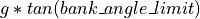
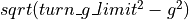

route¶
- route … end_route¶
route # Commands navigation # Navigation Commands label ... position ... mgrs_coordinate ... offset ... turn_left ... turn_right ... turn_to_heading ... goto ... # Waypoint Commands altitude ... depth ... heading ... turn ... speed ... linear_acceleration ... radial_acceleration ... bank_angle_limit ... turn_g_limit ... climb_rate ... dive_rate ... pause_time ... execute ... extrapolate ... stop ... remove ... switch_on_passing ... switch_on_approach ... distance ... time ... time_to_point ... node_id ... aux_data ... end_aux_data end_navigation # Auxiliary Data Commands aux_data ... end_aux_data # Route Insertion Commands transform_route ... transform_absolute_route ... end_route
# Define a route on a platform. platform ... route ... end_route end_platform # Define a route type that can be referenced by the use_route command of the platform or route_network # commands, or by transform_route or transform_absolute_route commands. # # These occur outside platform definitions. route <name> ... end_route
Overview¶
A route is a collection of waypoints that define a path, or route, for movers which use routes (e.g.: WSF_AIR_MOVER, WSF_GROUND_MOVER, WSF_ROAD_MOVER and WSF_SURFACE_MOVER) or to define a portion of a route within a route_network.
The start of a waypoint in indicated by the presence of one of the following commands:
A specific latitude and longitude (position)
An offset relative to the current position (offset)
A command to turn (turn_left, turn_right or turn_to_heading)
A command to ‘goto’ another labeled waypoint (goto)
The definition of the waypoint continues until the next command that starts a new waypoint.
Note
Parameters like speed, altitude, climb_rate, radial_acceleration, linear_acceleration, etc… are used for all subsequent waypoints until overridden.
Commands¶
Defines the block input for Navigation Commands used to enter the route waypoints and other navigational data.
Waypoint Commands¶
- altitude <length-value> [ agl | msl ]¶
Specifies the altitude at the waypoint. if agl or msl is omitted, the default altitude reference is defined by the mover. msl is assumed for WSF_AIR_MOVER and agl for all others.
- depth <length-value>¶
Specifies the sub-surface depth at the waypoint.
- heading <angle-value>¶
Specifies the heading at the waypoint. This is really only effective for a route with one point. If more than one waypoint is given then heading will be determined automatically.
- turn [ left | right | shortest ]¶
Specifies the direction to turn if a turn is required.
Default shortest
- speed <speed-value>¶
Specifies the speed at the waypoint.
- linear_acceleration <acceleration-value>¶
Specifies the linear acceleration to be used for changing speed on the route segment that starts with this waypoint. <acceleration-value> may also be default to use the mover’s default linear_acceleration.
Default The default linear acceleration for the mover.
- radial_acceleration <acceleration-value>¶
Specifies the radial acceleration to be used for turns when making heading changes on the route segment that starts with this waypoint. <acceleration-value> may also be default to use the mover’s default radial_acceleration.
Default The default radial acceleration for the mover.
Note
The radial acceleration is NOT the load factor for the aircraft. For example, if one desires a maximum load factor of n = 2 for a 2g turn, then the radial acceleration for a desired 2g turn limit would need to be set = = 1.732g.
- bank_angle_limit <angle-value>¶
Specifies the maximum bank angle to be used for turns when making heading changes on the route segment that starts with this waypoint. This effectively sets the radial_acceleration to .
- turn_g_limit <acceleration-value>¶
Specifies the maximum turn g-load to be used for turns when making heading changes on the route segment that starts with this waypoint. This effectively sets the radial_acceleration to .
- climb_rate <speed-value>¶
- dive_rate <speed-value>¶
Specifies the rate of climb or dive for changing altitude on the route segment that starts with this waypoint. <speed-value>* may also be default to use the mover’s default climb_rate. Note: the commands climb_rate and dive_rate are synonymous – specifying a dive_rate will replace a previously specified climb_rate.
Default The default climb/dive rate for the mover.
- maximum_flight_path_angle <angle-value>¶
- maximum_flight_path_angle default¶
Specifies the maximum flight path angle for climbs and dives that happen after this waypoint. If default is specified, the mover will use its default value.
- pause_time <time-value>¶
When the waypoint is reached, stop moving for the specified time.
- execute <script-name> <callback-name>¶
Specify a script or callback to be executed upon reaching the waypoint. <script-name>/<callback-name> must be the name of a ‘script’ defined for the platform or platform_type.
- extrapolate¶
- stop¶
- remove¶
Indicates to the mover what is to be done when this waypoint is encountered and there are no more waypoints in the route. The possible actions are:
extrapolate - continue moving at the current speed, heading and altitude.
stop - stop moving.
remove - remove the platform from the simulation.
The default depends on the type of mover as follows:
extrapolate - WSF_AIR_MOVER
- switch_on_passing¶
- switch_on_approach¶
Defines the condition when the mover should declare that it has reached this waypoint and should start moving towards the next waypoint. switch_on_passing is sometimes known as ‘turn long’ and causes the switch to occur when the platform passes over or along side of the waypoint. switch_on_approach is sometimes known as ‘turn short’ and causes the switch to occur before the waypoint.
Default switch_on_passing.
Note
switch_on_approach is applicable only if the following point is also a position waypoint. The user is also responsible for ensuring the target waypoint is such that the turn can be completed properly.
- distance <length-value>¶
- time <time-value>¶
If the waypoint is a turn_left, turn_right or turn_to_heading and the next waypoint is also one of the same class, this command specifies how long or how far to move until switching to the next waypoint.
- time_to_point <time-value>¶
If specified, the mover will change speed in attempt to reach this waypoint after the specified duration. <time-value> is the length of time it should take the platform to move from the previous waypoint to the current one. time_to_point may only be specified for position waypoints.
- node_id <string>¶
This command is used only if the route is part of a route_network. Waypoints that share the same node_id within a set of routes within a route_network are assumed to intersect or connect at those points.
Note
It is the responsibility of the user to ensure that waypoints with the same node_id actually have the same spatial location.
Route Insertion Commands¶
The following commands allow another route to be inserted at the current point within the route. This allows the creation of routes that represent patterns.
- insert_route <route-name> [ reference_heading <heading> ]¶
- insert_route <route-name> <latitude> <longitude> <heading>¶
Transforms the named route and inserts its waypoints into the route being defined. The named route should have already been defined as a ‘route type’. All points in the named route that were defined using the offset command are transformed to a new coordinate system whose origin and orientation are defined below and then internally converted to position points.
The first form should be used if the command occurs in a route in which waypoints appear before it. It uses the latitude and longitude of the preceding waypoint as the origin for the transformation coordinate system. If reference_heading was specified then it defines the orientation of the transformation coordinate system. If omitted, it will use the heading between the preceding two waypoints, or 0 if there is only one preceding waypoint.
The second form should be used if the command occurs as the first item in the route. The <latitude>, <longitude> and <heading> values specify the origin and orientation of the transformation coordinate system.
Note
This command is useful for inserting patterns (e.g.: orbits, etc.) into the route.
- insert_offset_route <route-name> [ reference_heading <heading> ]¶
- insert_offset_route <route-name> <latitude> <longitude> <heading>¶
The insert_offset_route command is similar to insert_route. The insert_offset_route command converts offset waypoints to be relative to a single origin. This is different than offset waypoints explicitly defined in a route which are treated relative to the previous waypoint. This means a route explicitly containing offset waypoints will be a different route than one that implicitly includes those offset waypoints using the insert_route command.
Deprecated Route Insertion Commands¶
- transform_route <route-name> [ reference_heading <heading> ]¶
- transform_route <route-name> <latitude> <longitude> <heading>¶
Transforms the named route and inserts its waypoints into the route being defined. The named route should have already been defined as a ‘route type’. All points in the named route that were defined using the offset command are transformed to a new coordinate system whose origin and orientation are defined below and then internally converted to position points.
The first form should be used if the command occurs in a route in which waypoints appear before it. It uses the latitude and longitude of the preceding waypoint as the origin for the transformation coordinate system. If reference_heading was specified then it defines the orientation of the transformation coordinate system. If omitted, it will use the heading between the preceding two waypoints, or 0 if there is only one preceding waypoint.
The second form should be used if the command occurs as the first item in the route. The <latitude>, <longitude> and <heading> values specify the origin and orientation of the transformation coordinate system.
Note
This command is useful for inserting patterns (e.g.: orbits, etc.) into the route.
Deprecated since version 2.9: This command will be replaced by insert_route.